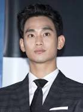
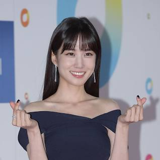
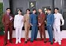
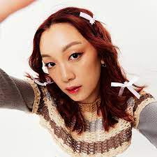
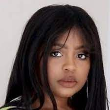
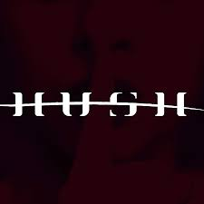

| Main Guest | ||
|---|---|---|
| Song Joong-Ki | Kim Soo-hyn | Park Eun-bin |
|
South Korean actor rose to fame in the historical coming-of-age drama Sungkyunkwan Scandal |

A South Korean actor. One of the highest-paid actors in South Korea winning several awards. |

A South Korean actress. She began her career as a child model, and made her small screen debut as a child actress. |
| BTS | Blackpink | Seventeen |
| 
BTS, also known as the Bangtan Boys, is a South Korean boy band formed in 2010. |
Blackpink is a South Korean girl group formed by YG Entertainment. |
Seventeen is a South Korean boy band formed by Pledis Entertainment. |
| Secondary Guest | ||
|---|---|---|
| Amanda Rach Lee | Hee Jun Han | Miss Darcei |
| 
She's an artist and youtuber. On her social media platforms, she posts content about art & journaling in hopes of inspiring people. |
He's a South Korean singer. He finished in ninth place on the eleventh season of American Idol in 2012. |

She gained fame from her Youtube Channel where to does beauty vlogging about korean makeup products. |
| samUIL | Kcreative Studios | Hush Crew LA |
|
South Korean singer, songwriter and actor who rose to fame as a contestant on the Mnet survival show Produce 101. |
It's a platform to support your favorite Kpop artists. |

It's a group of dancers who cover Kpop songs. |